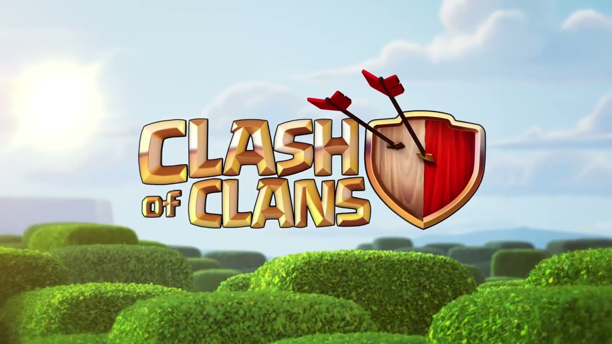

Jogos RTS
Os jogos RTS (Real-Time Strategy) são um gênero popular na indústria de jogos, que envolvem estratégia em tempo real e tomada de decisões rápidas. Aqui está uma visão geral da história, competitividade e alguns dados sobre jogos RTS.
História:
Os jogos RTS remontam ao início dos anos 1980, com títulos como "Utopia" e "The Ancient Art of War". No entanto, foi o lançamento de "Dune II" pela Westwood Studios em 1992 que popularizou o gênero. "Dune II" foi o primeiro jogo a apresentar a fórmula clássica de um RTS, onde os jogadores controlam uma facção e constroem uma base para coletar recursos, treinar unidades e enfrentar inimigos.
No final da década de 1990 e início dos anos 2000, os jogos RTS atingiram seu auge de popularidade. Títulos como "Warcraft II", "StarCraft" e "Age of Empires II" se tornaram icônicos e estabeleceram muitos dos elementos fundamentais dos jogos RTS modernos.
Competitividade:
Os jogos RTS têm uma forte cultura competitiva. Desde os primeiros dias do gênero, os jogadores competem uns contra os outros em partidas multiplayer, desafiando suas habilidades estratégicas e capacidade de reagir rapidamente às mudanças do jogo.
StarCraft
É um dos jogos RTS mais competitivos e influentes de todos os tempos. Lançado em 1998 pela Blizzard Entertainment, ele estabeleceu a base para a cena competitiva dos jogos RTS. O jogo possui três facções únicas e balanceadas, e sua expansão, "StarCraft: Brood War", tornou-se especialmente popular na Coreia do Sul, onde os jogadores profissionais se tornaram verdadeiras celebridades do eSports.

Warcraft III
Outros jogos RTS também têm uma presença competitiva significativa. "Warcraft III" da Blizzard e a série "Command & Conquer" da Westwood Studios são exemplos de jogos que tiveram sucesso em competições profissionais e ligas organizadas.
Dados de jogos RTS:
Os jogos RTS atraem uma base de fãs dedicada e têm uma rica história competitiva. Aqui estão alguns dados interessantes sobre jogos RTS:
StarCraft II
Sequência do aclamado "StarCraft", lançado em 2010, é um dos jogos RTS mais jogados atualmente. Ele mantém uma cena competitiva ativa, com torneios regulares e uma liga oficial, a "StarCraft II World Championship Series".
Warcraft III: Reign of Chaos
Sua expansão "The Frozen Throne" lançados em 2002, têm uma comunidade ativa de jogadores e também são conhecidos por sua cena competitiva. O jogo foi responsável pelo surgimento do gênero de jogos de defesa de torres (tower defense) e de jogos do tipo MOBA.
O maior prêmio em dinheiro já oferecido em um torneio de RTS foi no "The International 2019" de "Dota 2" (um jogo MOBA), que distribuiu mais de US$ 34 milhões. Embora não seja estritamente um RTS, esse número mostra o potencial dos eSports em termos de premiação. O gênero RTS tem sido adaptado para dispositivos móveis, com jogos como "Clash Royale" e "Clash of Clans" alcançando enorme popularidade. Estes são apenas alguns dados gerais sobre a história, competitividade e informações sobre jogos RTS. O gênero continua a evoluir, e os jogadores continuam a desfrutar de desafios estratégicos em tempo real, competindo uns contra os outros em partidas emocionantes.